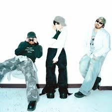

Latin Mafia es un grupo musical mexicano formado por tres hermanos: Mike, Emilio y Milton.
El proyecto nació de manera independiente, cuando comenzaron a experimentar con sonidos y
a compartir su música a través de redes sociales y plataformas digitales.
Desde sus inicios, el grupo destacó por su estilo fresco y diferente, combinando pop alternativo,
urbano, electrónica e indie. Su propuesta musical conecta especialmente con el público joven,
gracias a letras que hablan sobre el amor, la nostalgia, las emociones y experiencias personales.
Con el paso del tiempo, Latin Mafia ganó popularidad en México y otros países de Latinoamérica,
logrando millones de reproducciones en plataformas de streaming. Canciones como “Julieta”
y “Sal Rosa” ayudaron a consolidar su identidad artística y a posicionarlos como una de las
nuevas promesas de la música latina.
Actualmente, el grupo continúa creciendo, realizando presentaciones en vivo y desarrollando
nuevos proyectos musicales, manteniendo siempre su esencia creativa y su conexión con sus seguidores.
Puedes visitar su perfil oficial aquí: Ver más información
| Dato | Información |
|---|---|
| Origen | México |
| Integrantes | Mike, Emilio y Milton |
| Género | Pop alternativo / Urbano |
| Año de inicio | 2021 |
